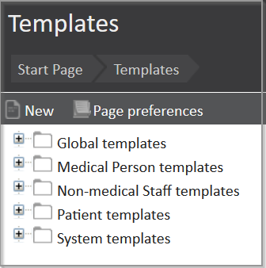
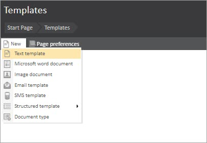
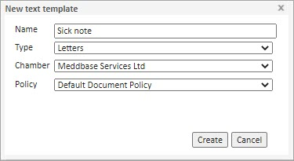
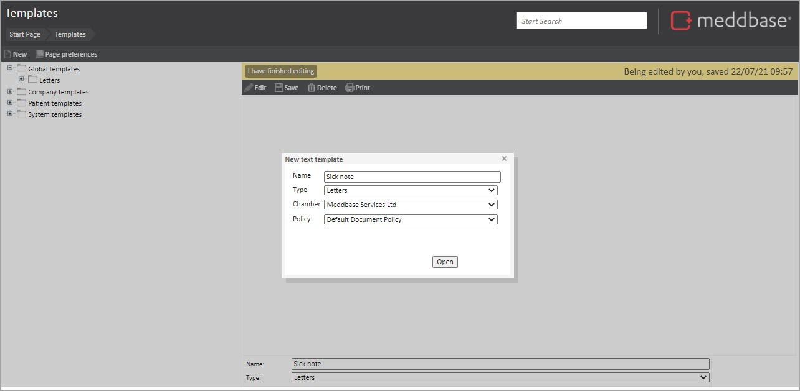
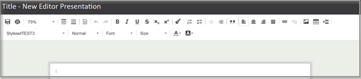
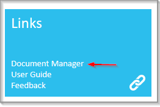

Templates are stored within the ‘Templates’ section of the Meddbase application. They can be accessed via Start Page > Templates.
Before you create a template you should decide:

Saving a template in an appropriate folder will help you to organise your documents. Notably:
Therefore, it is crucial to decide when documents might be needed and where they should be stored.
Sub-folders are called Document Types. You can create as many of them as you need. Please see the article How to Create a Document Type for more information.
Template codes enable you to insert placeholders into templates that can be used to produce a document which incorporates values from a record. This means you can have just a few types of templates and be able to create hundreds of documents for your patients, companies, doctors and others with just a few clicks.
As an example, we have the template codes:
{Patient.Surname}, {Patient.Dob}
When used in a template to produce a document, these codes above will print the patient’s surname and date of birth. You just need to make sure that you create a document from the specific patient’s Documents section. Otherwise, the system will not know what patient you want to refer to.
You can find a full list of template codes by searching this knowledge base for "template codes".
Meddbase allows you to create different types of templates.
First, let us have a look at text documents, which you will probably use most frequently.
To create a text template:



You are then in the Document Editor.

The Document Editor allows you to create documents in a similar way to many other online document editors. You can easily:
To maintain the consistency of your documents, you can define Stylesets via either of the following options
There is a separate article on Stylesets.
Meddbase allows you to create, upload and edit Word templates and documents. However, you need to have the Meddbase Document Manager installed on your computer (when using Windows PC).
You can download the Manager from the Start Page, by clicking on 'Document Manager' on the 'Links' tile.

You might also add a rule under your system settings, which will state that every .meddbase file opens with the Document Manager.
There is a separate article on Creating a Template in MS Word.
A structured template consists of sections, which can be templates (also existing separately) and can be displayed depending on specific conditions.
For example, a structured template can display different content depending on the patient's gender or pathology results.
Click here for a detailed article on How to create a Structured text template.